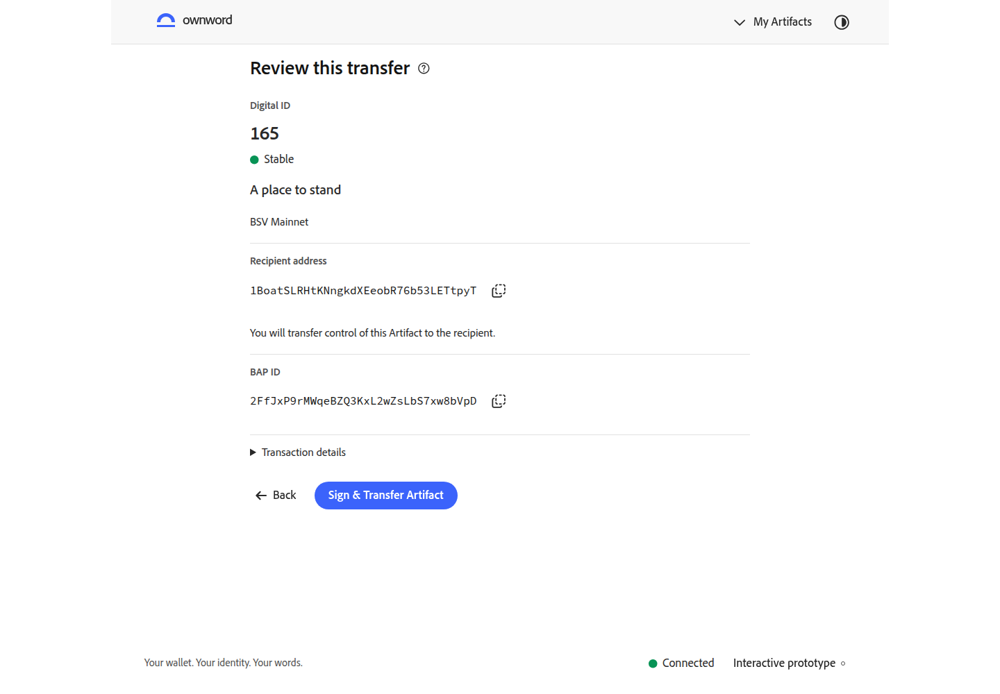
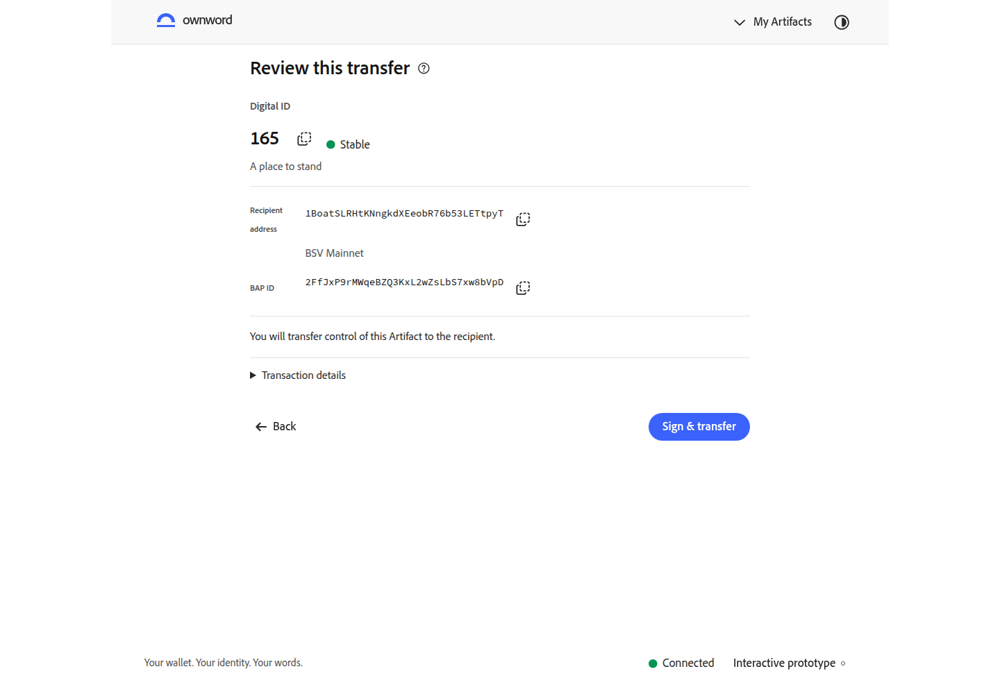
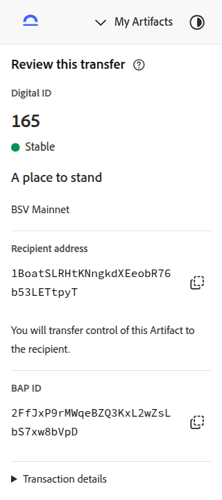
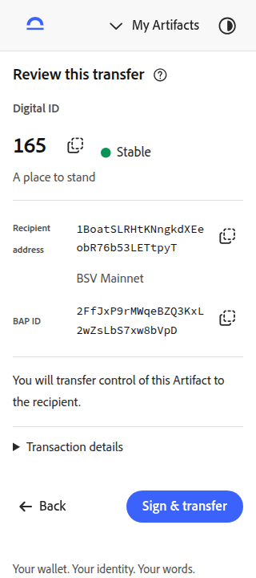
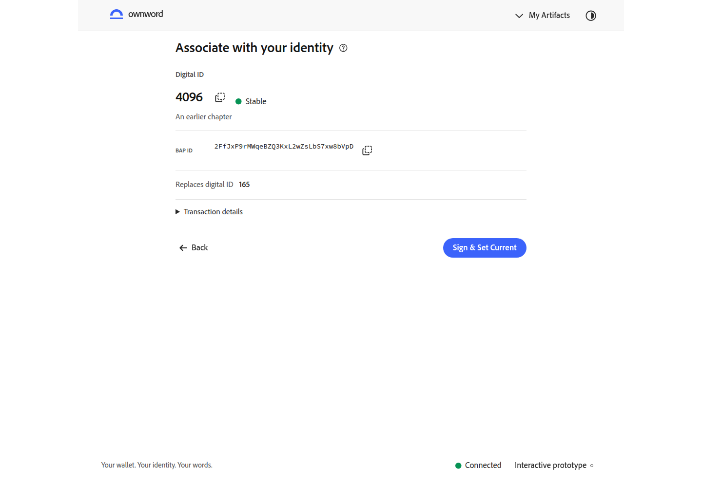
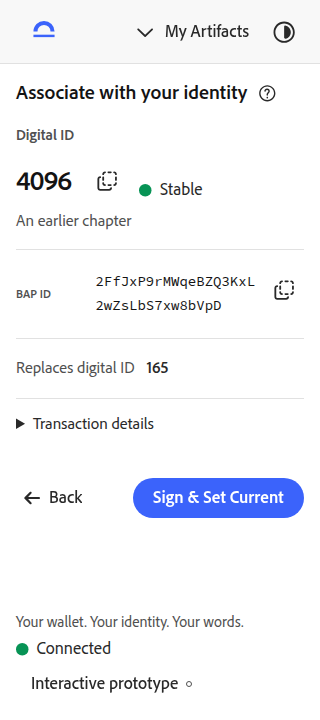
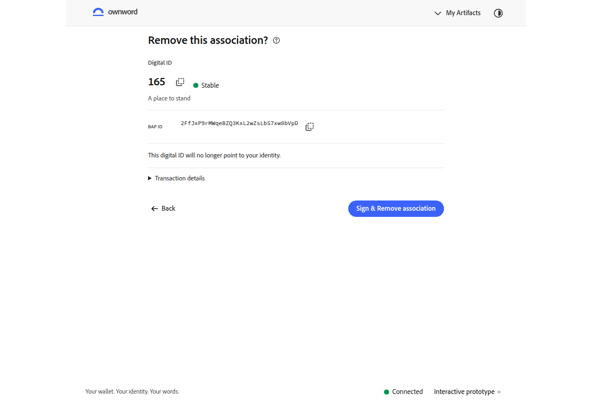
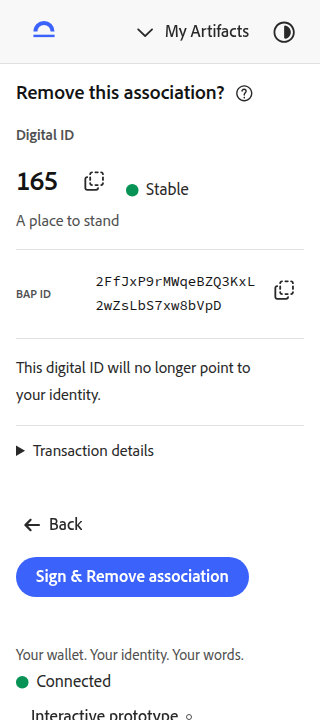
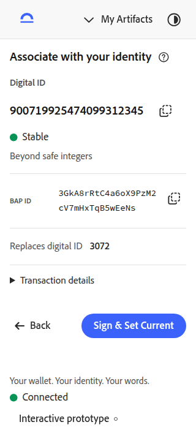

Artifact 核对页 · 信息与操作成组
编号、状态和名称形成对象摘要；完整接收地址与操作 BAP ID 集中排列，转移影响、交易详情与签名操作保持连续。手机签名按钮底边由约 824px 提前到 651px，完整进入 720px 首屏。
打开交互原型 · 上一轮：身份安全与轮换 · 编辑器修复对照 · 编辑器逐动作清单 · 待视觉复核
转移页 20 项检查、10 次自动无障碍检查通过；关联、移除和超长编号另有 7 项记录。相关记录组合初次检查与定向复核，原始失败仍保留。转移证据 · 相关页证据
桌面 · 1440 × 1000
同一 Artifact、编号、接收地址、操作身份和英文浅色。复制始终使用原始完整标识，交易详情仍可展开。


手机 · 320 × 720
同一 Artifact、编号、接收地址、操作身份和英文浅色。复制始终使用原始完整标识，交易详情仍可展开。


关联核对
共用对象摘要、完整身份标识与交易详情分组，保留替换对象或移除影响。


移除关联核对
共用对象摘要、完整身份标识与交易详情分组，保留替换对象或移除影响。


超长数字 ID
21 位编号不取整、不转科学计数法；手机显示与实际粘贴保持原值。
